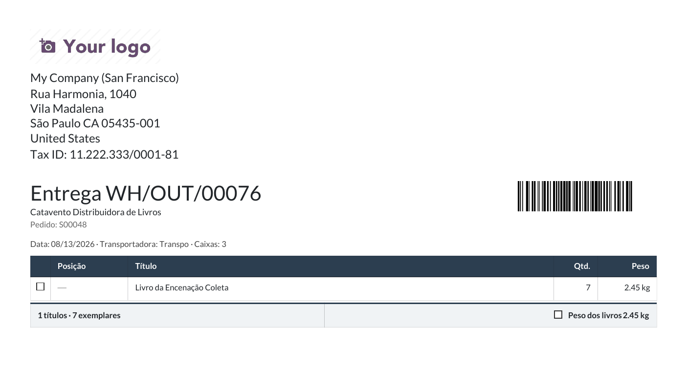

Transportadora e coleta
Cada cliente tem a sua transportadora, e quem embala precisa de duas coisas: ver na entrega quem a leva, e chamar a transportadora para buscar. Este manual mostra o caminho inteiro — cadastrar a transportadora, apontá-la no cliente e pedir a coleta por e-mail.
Como cadastro uma transportadora?
São dois cadastros que se completam: a empresa (um contato comum) e o método de entrega (o nome que aparece nas telas de venda e de entrega).
- Em , crie a transportadora como Empresa, com CNPJ, telefone e principalmente o E-mail — é para esse endereço que os pedidos de coleta serão enviados.
- Em , crie (ou abra) o método com o nome da transportadora e preencha o campo Empresa transportadora apontando para o contato do passo 1.

Transportadora grande não atende coleta na caixa geral. Se a que você usa tem uma mesa de coletas com endereço próprio, crie dentro da ficha dela um contato do tipo Entregas com esse e-mail: a solicitação passa a ir para ele, e o e-mail geral da empresa fica só para o resto. O campo Contato de coleta, na solicitação, mostra sempre para quem vai — e pode ser trocado antes do envio.
Como digo qual transportadora um cliente usa?
Na ficha do cliente, aba , campo Método de entrega. É ali que se diz, por exemplo, que a livraria Catavento usa a Transpo. Só isso: o resto acontece sozinho.
O que acontece quando confirmo uma venda?
A transferência de saída já nasce com a transportadora do cliente. Ela aparece na ficha da entrega, aba , bloco Informações de envio — e pode ser trocada ali, entrega por entrega, enquanto o movimento não foi validado.
Se o cliente não tem método de entrega preenchido, a entrega nasce sem transportadora — e vai aparecer como aviso na hora de pedir a coleta.

Caixas e peso: quem preenche o quê
A nota fiscal precisa declarar quantos volumes vão e quanto pesam — e é a movimentação que sabe. Na ficha da entrega, aba , ao lado da transportadora:
| Campo | De onde vem |
|---|---|
| Caixas | Ninguém calcula: quem embala conta e digita. É o número que a nota declara e que a transportadora usa para escolher o veículo. |
| Peso | Somado do peso dos livros da entrega. Se os livros não têm peso cadastrado, sai zero — e aí quem fatura pesa a caixa e digita na nota. |
| Peso para envio | Opcional: o peso medido na balança. Quando preenchido, ele vale no lugar da soma. |
Na fatura, aba , bloco Volumes e peso: quem fatura confere, corrige se precisar, e tem o botão Trazer da movimentação para buscar de novo os números das transferências.

Como peço a coleta?
Da lista de entregas, em lote — nunca uma por uma.
- Abra e marque as entregas que estão prontas para viajar.
- No menu , clique em Solicitar coleta.
- A janela mostra uma linha por transportadora, com o e-mail que vai receber o pedido e as entregas de cada uma. Catorze entregas da Transpo são um e-mail com uma tabela, não catorze e-mails.
- Clique em Enviar. O e-mail sai com o texto padrão da casa e a tabela das entregas: referência, pedido de origem, destinatário, cidade/UF, caixas e peso — com o total no rodapé, que é o que a transportadora lê para mandar o veículo certo.

O Odoo leva você direto à solicitação criada — é lá que ela passa a morar.
Onde acompanho o que já foi pedido?
Em . Cada solicitação é um lote numerado (COL/2026/00001) com uma transportadora e as entregas que ela vem buscar. É esse número que se cita ao telefone.
Na ficha da solicitação estão o e-mail que saiu (no histórico, à direita, como foi escrito) e os campos que a logística preenche quando a transportadora responde:

| Campo / botão | Para quê |
|---|---|
| Data combinada | O dia que a transportadora confirmou para a coleta. |
| Protocolo da transportadora | O número que ela dá à coleta, quando dá — o que se cita para cobrar. |
| Marcar como coletada | Fecha a solicitação quando o caminhão passou e levou. |
| Enviar de novo | Reenvia o mesmo pedido, sem criar outro lote — para quando ninguém responde. |
Cada entrega também guarda o seu rastro: a data em Coleta solicitada em, o link para a solicitação na aba , e uma nota no histórico dizendo a quem foi pedida. Na lista de entregas, os filtros Com coleta solicitada e Sem coleta solicitada separam o que já foi chamado do que ainda espera.
Como mudo o texto do e-mail?
Em , campo Texto do e-mail de solicitação de coleta. O texto é por empresa; vazio, vale o padrão do sistema ("Solicitamos a coleta dos volumes relacionados abaixo…"). A tabela de entregas e o endereço de coleta entram sempre, independentemente do texto.
Quando algo não sai como esperado
| O que aparece | Por quê | O que fazer |
|---|---|---|
| "Solicitar coleta" não está no menu Ações | Nenhuma linha marcada, ou a tela não é a lista de entregas. | Volte à lista de Pedidos de entrega e marque ao menos uma linha. |
| Aviso "Sem transportadora" na janela | Aquelas entregas não têm transportadora preenchida. | Elas ficam fora do envio, sem travar as demais. Preencha a transportadora na ficha da entrega (ou no cliente, para as próximas) e peça de novo. |
| Linha vermelha na janela, e depois uma solicitação em Rascunho | O contato da transportadora está sem e-mail. | O agrupamento não se perde: a solicitação é criada em rascunho. Complete o e-mail no contato da transportadora e clique Enviar na ficha dela. |
| O e-mail ainda não chegou | O envio sai em lote pela fila do sistema, não na hora do clique. | Aguarde alguns minutos. Em ambiente de teste o envio externo fica contido de propósito. |
O que não fazer
- Não use o "Enviar e-mail" genérico da lista para falar com a transportadora. Aquela ação escreve para o cliente de cada entrega — e uma por uma. Coleta é pela ação Solicitar coleta.
- Não cadastre a transportadora dentro do cliente. Transportadora é contato próprio, ligado ao método de entrega — dentro do cliente ela viraria endereço de entrega.